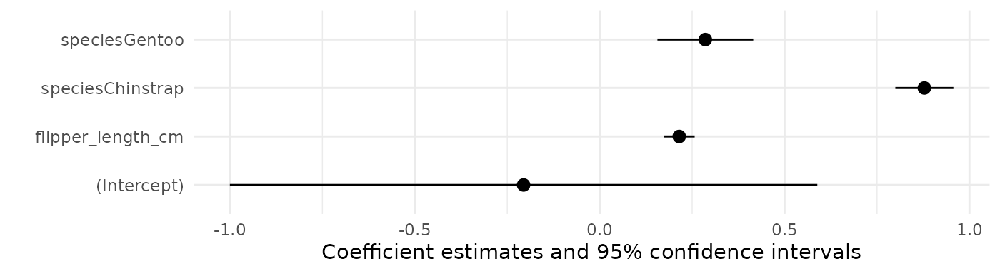
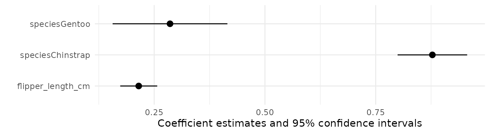
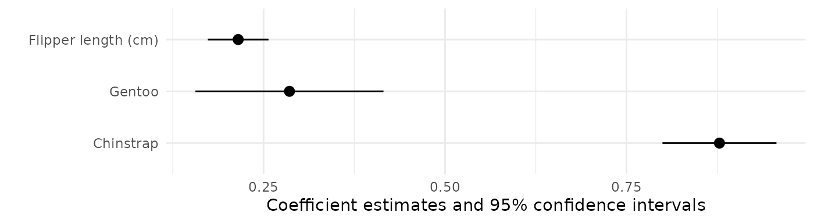
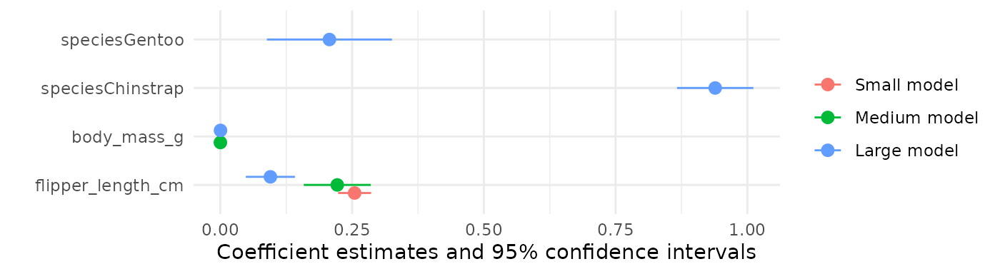
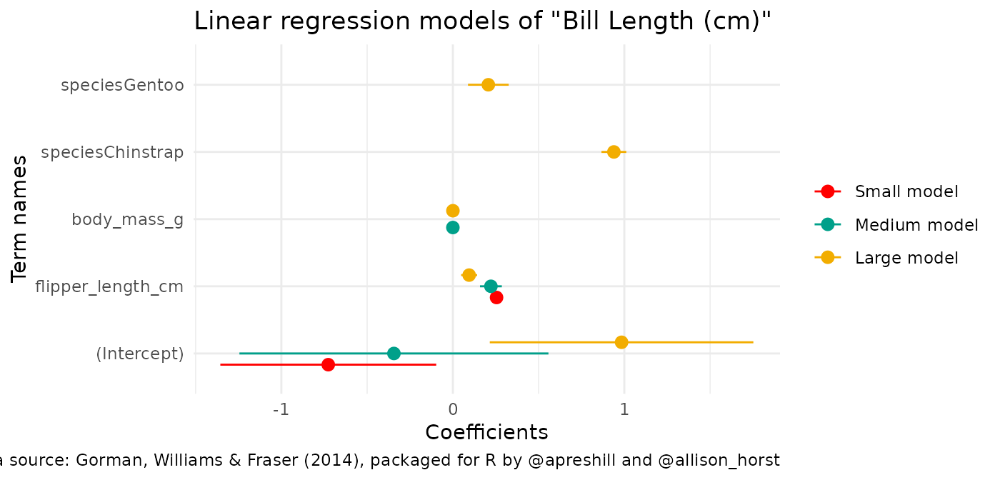
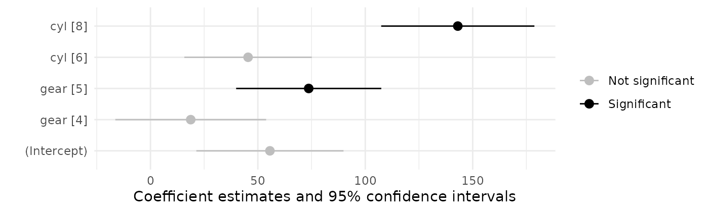
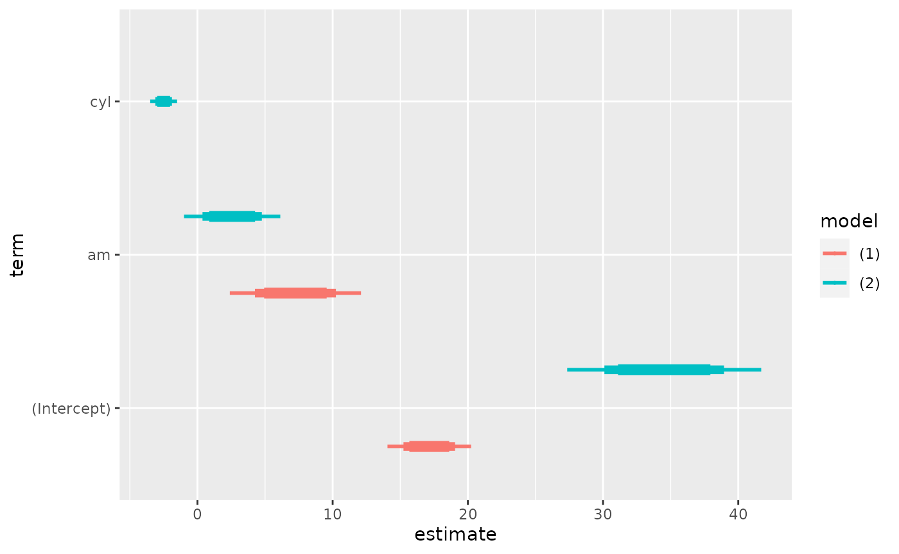

`modelplot`: Plot model coefficients with confidence intervals
Source:vignettes/modelplot.Rmd
modelplot.Rmd## Warning in !is.null(rmarkdown::metadata$output) && rmarkdown::metadata$output
## %in% : 'length(x) = 2 > 1' in coercion to 'logical(1)'## Warning in system("timedatectl", intern = TRUE): running command 'timedatectl'
## had status 1modelplot is a function from the modelsummary package. It allows you to plot model estimates and confidence intervals. It makes it easy to subset, rename, reorder, and customize plots using same mechanics as in modelsummary.
To illustrate how the function works, we fit a linear model to data about the Palmer Penguins:
url <- 'https://vincentarelbundock.github.io/Rdatasets/csv/palmerpenguins/penguins.csv'
dat <- read.csv(url)
# rescale mm -> cm
dat$bill_length_cm <- dat$bill_length_mm / 10
dat$flipper_length_cm <- dat$flipper_length_mm / 10
mod <- lm(bill_length_cm ~ flipper_length_cm + species, data = dat)Then, we load the modelsummary library and call modelplot:
library(modelsummary)
modelplot(mod)
Rename, reorder, subset
modelplot uses the same mechanics as modelsummary to rename, reorder, and subset estimates. First, you can use the coef_omit argument. This will omit any coefficient that matches a string or regular expression. To omit the intercept, for example, we can type:
modelplot(mod, coef_omit = 'Interc')
Second, you can use the coef_map argument. coef_map is a named character vector, where names correspond to the original term names, and values correspond the names you want to assign. Any variable that is not included in coef_map will be excluded. Variables will also be drawn in the same order as in coef_map:
cm <- c('speciesChinstrap' = 'Chinstrap',
'speciesGentoo' = 'Gentoo',
'flipper_length_cm' = 'Flipper length (cm)')
modelplot(mod, coef_map = cm)
Several models
The main modelsummary functions allows you to create a table with the results of several models side-by-side, by storing them in a (potentially named) list:
models <- list(
"Small model" = lm(bill_length_cm ~ flipper_length_cm, data = dat),
"Medium model" = lm(bill_length_cm ~ flipper_length_cm + body_mass_g, data = dat),
"Large model" = lm(bill_length_cm ~ flipper_length_cm + body_mass_g + species, data = dat))
modelsummary(models, statistic = 'conf.int')| Small model | Medium model | Large model | |
|---|---|---|---|
| (Intercept) | -0.726 | -0.344 | 0.984 |
| [-1.356, -0.097] | [-1.245, 0.557] | [0.215, 1.752] | |
| flipper_length_cm | 0.255 | 0.222 | 0.095 |
| [0.224, 0.286] | [0.158, 0.285] | [0.048, 0.142] | |
| body_mass_g | 0.000 | 0.000 | |
| [0.000, 0.000] | [0.000, 0.000] | ||
| speciesChinstrap | 0.939 | ||
| [0.867, 1.011] | |||
| speciesGentoo | 0.207 | ||
| [0.088, 0.326] | |||
| Num.Obs. | 342 | 342 | 342 |
| R2 | 0.431 | 0.433 | 0.817 |
| R2 Adj. | 0.429 | 0.430 | 0.815 |
| AIC | 369.0 | 369.6 | -12.6 |
| BIC | 380.5 | 385.0 | 10.4 |
| Log.Lik. | -181.499 | -180.813 | 12.313 |
| F | 257.092 | 129.365 | 375.333 |
| RMSE | 0.41 | 0.41 | 0.23 |
modelplot works the same way:
modelplot(models, coef_omit = 'Interc')
Instead of displaying results with “dodged” side-by-side lines, you can also use facet:
modelplot(models, facet = TRUE)Customizing plots
The graphs produced by modelplot are simple ggplot2 objects. You can thus post-process them using the normal suite of functions available for all objects of this type. Here, we change the axis labels, add a title and a caption, and use a color scheme inspired by Wes Anderson’s Darjeeling Limited:
library(wesanderson)
library(ggplot2)
modelplot(models) +
labs(x = 'Coefficients',
y = 'Term names',
title = 'Linear regression models of "Bill Length (cm)"',
caption = "Data source: Gorman, Williams & Fraser (2014), packaged for R by @apreshill and @allison_horst") +
scale_color_manual(values = wes_palette('Darjeeling1'))
In ggplot2, some visual choices must be made when calling the “geom”, rather than with post-processing functions. For instance, the size, color, fatten, linetype arguments must all be specified inside the geom_pointrange function for them to take effect. modelplot will pass any unknown argument to geom_pointrange, so users can simply call:
modelplot(mod, size = 1, fatten = .7, color = 'darkgreen', linetype = 'dotted') +
theme_classic()
Conditional colors and shape
Note: This section requires a version of modelsummary greater than 1.2.0 or the development version.
In a very nice Stack Overflow answer, Allan Cameron shows how we can use the aes() function from ggplot2 to add conditional aesthetics. For example, if we want to display statistically significant coefficients in a different color:
library(ggplot2)
mod <- lm(hp ~ factor(gear) + factor(cyl), data = mtcars)
modelplot(mod, coef_rename = TRUE) +
aes(color = ifelse(p.value < 0.001, "Significant", "Not significant")) +
scale_color_manual(values = c("grey", "black"))
Example: Using facets to compare models
Customizing plots with ggplot2 makes modelplot very flexible. For example, imagine you want to compare the coefficients of three models with different dependent variables. First, we load the packages and estimate our models:
library(ggplot2)
library(modelsummary)
models <- list(
lm(vs ~ carb + mpg + cyl, data = mtcars),
lm(disp ~ carb + mpg + cyl, data = mtcars),
lm(hp ~ carb + mpg + cyl, data = mtcars))Then, we use the dvnames function to rename our list with names matching the the dependent variable in each model:
models <- dvnames(models)By calling modelplot with the draw=FALSE argument, we see the raw data used to draw the plot. Here, we see that there is a model column:
modelplot(models, draw = FALSE)## term model estimate std.error conf.low conf.high
## 1 (Intercept) vs 2.41742511 0.67622094 1.03224931 3.80260091
## 5 (Intercept) disp 112.57276339 114.86315481 -122.71374324 347.85927003
## 9 (Intercept) hp -10.56116383 68.75946117 -151.40853516 130.28620751
## 2 carb vs -0.06945116 0.03943402 -0.15022810 0.01132577
## 6 carb disp -12.30144724 6.69827859 -26.02224894 1.41935446
## 10 carb hp 17.75593287 4.00972816 9.54237706 25.96948867
## 3 mpg vs -0.01513960 0.01716410 -0.05029868 0.02001947
## 7 mpg disp -7.14964651 2.91550156 -13.12178072 -1.17751230
## 11 mpg hp -1.00486469 1.74527956 -4.57990780 2.57017842
## 4 cyl vs -0.23926135 0.05687969 -0.35577411 -0.12274859
## 8 cyl disp 47.90105842 9.66160634 28.11015499 67.69196184
## 12 cyl hp 20.60581208 5.78363747 8.75856779 32.45305638
## p.value
## 1 1.296718e-03
## 5 3.354494e-01
## 9 8.790301e-01
## 2 8.912324e-02
## 6 7.692105e-02
## 10 1.320972e-04
## 3 3.852593e-01
## 7 2.068858e-02
## 11 5.693755e-01
## 4 2.410214e-04
## 8 3.111898e-05
## 12 1.338485e-03Finally, we use the model column as our identifier in ggplot2’s facet_grid command to display models side by side:
modelplot(models, color = "black") + facet_grid(~model)
Confidence intervals: change or omit
You can change the \(\alpha\) level of your confidence intervals by changing the conf_level argument:
modelplot(mod, conf_level = .99)
modelplot(mod, conf_level = NULL)
Background annotations
Sometimes, you want to display annotations on a plot, but you would like to draw these annotations behind the geom_pointrange which displays the estimates. Since modelplot draws the geom_pointrange automatically, any ggplot2 annotation you add to the plot using + will be added on top of the existing ones.
To add your annotations in the background, you can pass them as a list of ggplot2 “geoms”:
library(ggplot2)
b <- list(geom_vline(xintercept = 0, color = 'orange'),
annotate("rect", alpha = .1,
xmin = -.5, xmax = .5,
ymin = -Inf, ymax = Inf),
geom_point(aes(y = term, x = estimate), alpha = .3,
size = 10, color = 'red'))
modelplot(mod, background = b)
Raw data & More customization
If you would like to customize the plots even more than what modelplot allows, you can obtain the raw data used to draw the plots by setting draw=FALSE:
modelplot(models, draw = FALSE)## term model estimate std.error conf.low conf.high
## 1 (Intercept) vs 2.41742511 0.67622094 1.03224931 3.80260091
## 5 (Intercept) disp 112.57276339 114.86315481 -122.71374324 347.85927003
## 9 (Intercept) hp -10.56116383 68.75946117 -151.40853516 130.28620751
## 2 carb vs -0.06945116 0.03943402 -0.15022810 0.01132577
## 6 carb disp -12.30144724 6.69827859 -26.02224894 1.41935446
## 10 carb hp 17.75593287 4.00972816 9.54237706 25.96948867
## 3 mpg vs -0.01513960 0.01716410 -0.05029868 0.02001947
## 7 mpg disp -7.14964651 2.91550156 -13.12178072 -1.17751230
## 11 mpg hp -1.00486469 1.74527956 -4.57990780 2.57017842
## 4 cyl vs -0.23926135 0.05687969 -0.35577411 -0.12274859
## 8 cyl disp 47.90105842 9.66160634 28.11015499 67.69196184
## 12 cyl hp 20.60581208 5.78363747 8.75856779 32.45305638
## p.value
## 1 1.296718e-03
## 5 3.354494e-01
## 9 8.790301e-01
## 2 8.912324e-02
## 6 7.692105e-02
## 10 1.320972e-04
## 3 3.852593e-01
## 7 2.068858e-02
## 11 5.693755e-01
## 4 2.410214e-04
## 8 3.111898e-05
## 12 1.338485e-03This allows users to use external tools such as the powerful ggdist package. In this example, we use the purrr::map_dfr function to call modelplot several times with different confidence levels. Then, we draw a plot where the different confidence intervals are drawn with different thicknesses:
library(tidyverse)
library(modelsummary)
library(ggdist)
# fit
models <- list(
lm(mpg ~ am, mtcars),
lm(mpg ~ am + cyl, mtcars))
# summarize
dat <- map_dfr(c(.8, .9, .99), function(x) {
modelplot(models, conf_level = x, draw = FALSE) %>%
mutate(.width = x)
})
# plot
ggplot(dat, aes(
y = term, x = estimate,
xmin = conf.low, xmax = conf.high,
color = model)) +
ggdist::geom_pointinterval(
position = "dodge",
interval_size_range = c(1, 3),
fatten_point = .1)